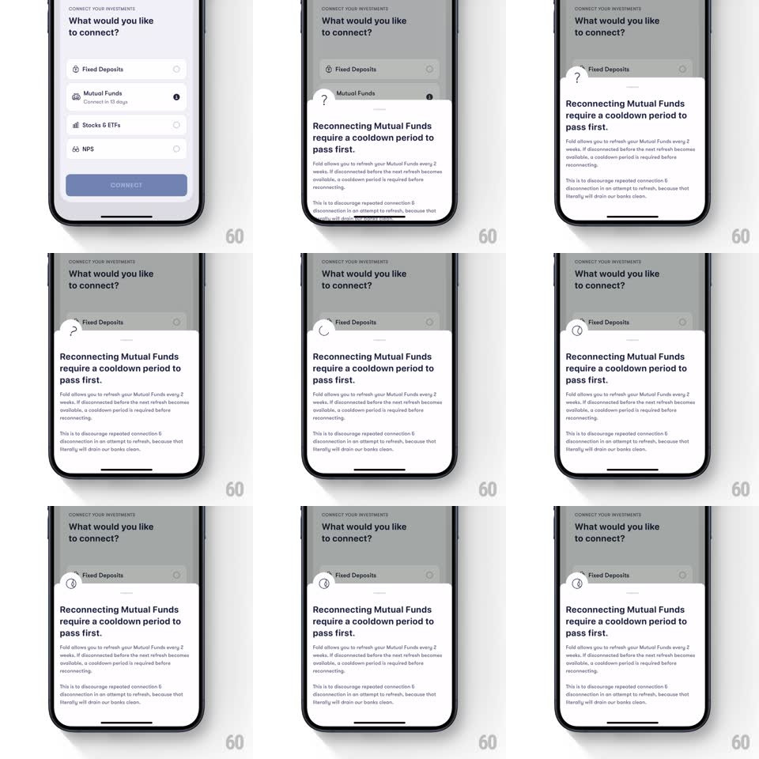

Media
Frame-by-frame

Rebuild this animation 1:1: Fold's info sheet icon morph - as the cooldown explainer sheet slides up, its circular badge morphs from a question mark into the Fold logo with a smooth rotation.

Rebuild this animation 1:1: Fold's info sheet icon morph - as the cooldown explainer sheet slides up, its circular badge morphs from a question mark into the Fold logo with a smooth rotation. ## Integration Integration: stack-agnostic spec - springs given as stiffness/damping, timed motions as duration + curve; map every value to your framework and animation library of choice. ## Scene The "What would you like to connect?" list (Fixed Deposits, Mutual Funds, Stocks & ETFs, NPS, Connect button) dimmed under a rising bottom sheet: "Reconnecting Mutual Funds require a cooldown period to pass first." with explainer copy, and a small circular badge pinned at the sheet's top edge. ## Motion spec Pattern: icon morph during sheet presentation, ~700ms. - Sheet: slides up over a dimming scrim (spring ~340/26, 450ms) with standard sheet corner radius. - Badge: the circle starts with a "?" glyph; as the sheet settles, the "?" rotates away (rotate 90deg + fade, 200ms) while the Fold logo mark rotates in from -90deg (200ms, ease-out) - a coin-turn swap inside the constant circle. - Settle: the badge finishes with a tiny scale bounce (1 -> 1.08 -> 1, spring ~420/18, 250ms) once the logo is in. - The sheet's title and body fade up staggered (title 200ms, body 150ms at +80ms). ## Calibration - The badge circle itself never changes size or color - only the glyph morphs. - The morph starts as the sheet nears rest, not at touch. ## Reduced motion Simple crossfade between glyphs (200ms). ## Don't miss - The glyph swap is a rotation pair - old rotates out, new rotates in - not a crossfade alone. - The scrim dims in step with the sheet's rise.